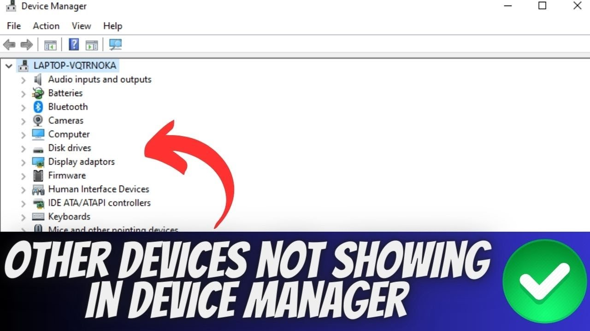
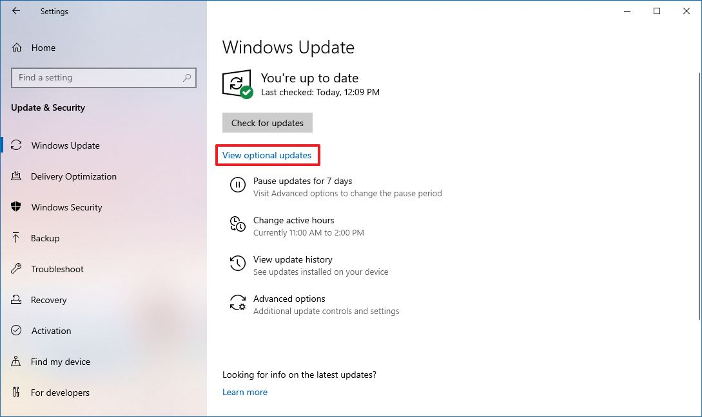
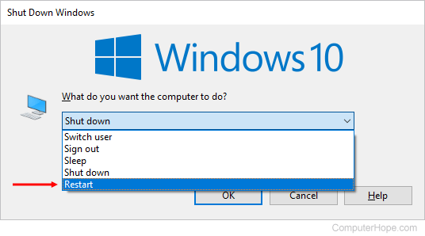
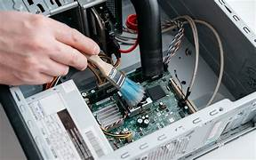
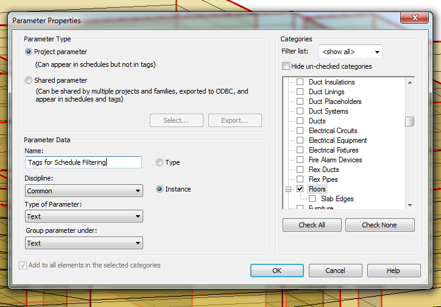

KEYBOARD/MOUSE MALFUNCTION TROUBLESHOOT
Experiencing issues with your keyboard or mouse can be frustrating, but many problems have simple fixes. Follow the steps below to troubleshoot and resolve any keyboard or mouse malfunctions.
Here are some steps you can take to solve the issue of malfunctioning keyboard or mouse:
- 1. Check the Physical Connection
Verify cable connection: Ensure the keyboard or mouse is properly connected to the USB port.
Try a different USB port: Switch the connection to another port to see if the issue is with the port itself.
- 2. Test with Another Device
Test the keyboard/mouse: Connect your device to another computer or laptop to see if it works properly there.
This helps determine if the issue is with the device or the computer.  - 3. Check for Driver Updates
Update drivers: Outdated or corrupted drivers can cause malfunctions. Go to the device manager and check if there are any updates available for your keyboard or mouse drivers.  - 4. Restart the Computer
Restart your system: Sometimes a simple restart can resolve the issue.
Reconnect the keyboard/mouse after the reboot to check for any improvements.  - 5. Clean the Device
Clean the keyboard/mouse: Dust or debris can cause issues with keypresses or mouse clicks.
Use compressed air or a soft cloth to clean the keyboard or mouse carefully.  - 6. Check for Software Interference
Disable conflicting software: Some software, such as custom keyboard or mouse drivers, can interfere with standard functionality. Try disabling or uninstalling such software to see if it resolves the problem.  - 7. Replace the Device
Replace keyboard or mouse: If the above solutions don’t work, it might be time to replace the malfunctioning device, especially if it's worn out or damaged.
Always test with a different keyboard/mouse to ensure the issue isn’t with the computer.
If your keyboard or mouse continues to malfunction, you may want to contact technical support or consult your device's manufacturer for further assistance.